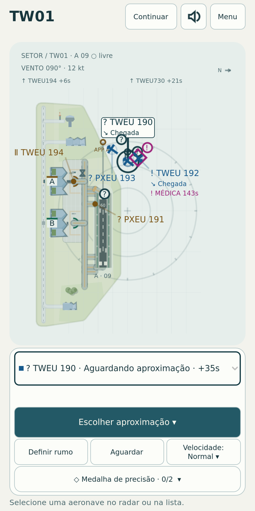
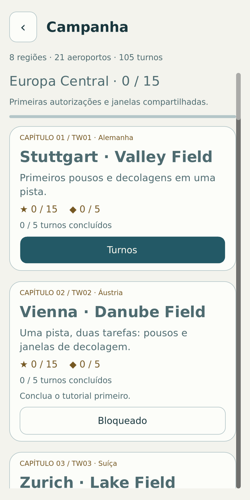
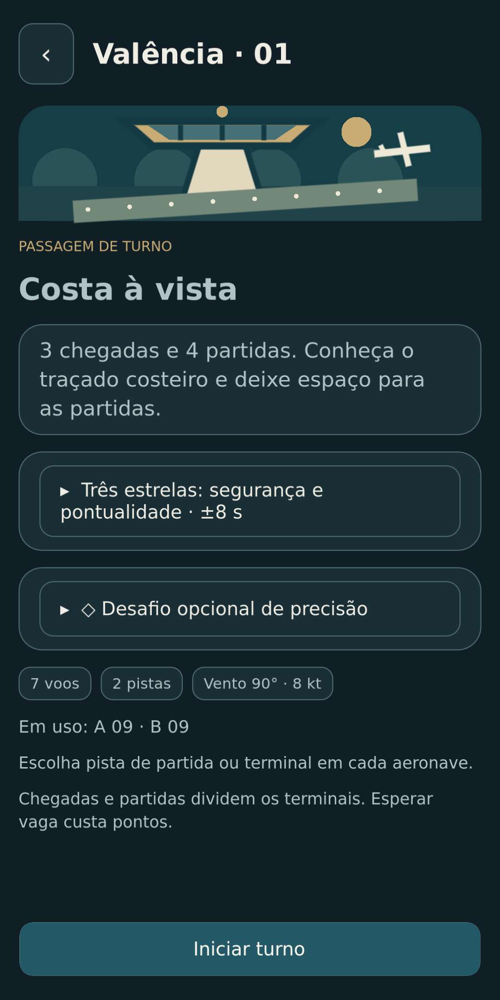

Já disponível para Android
tøwer
Sua torre. Seu espaço aéreo.
Mais um pouso, depois a próxima decolagem: em tøwer, você controla o tráfego aéreo. Dê instruções claras e leve cada avião ao seu destino com segurança, em uma viagem de aeroporto em aeroporto.
Conheça tøwer por dentro



Um novo desafio a cada turno
Coordene pousos e decolagens
Planeje rotas, ajuste a direção e a velocidade e escolha a hora certa para dar a próxima autorização.
Uma viagem pelo mundo
Descubra aeroportos com diferentes configurações de pistas. Cada novo destino convida você a pensar alguns passos à frente.
Mantenha a calma no meio do movimento
Com mais aviões e condições que mudam, o momento de agir faz toda a diferença. Fique de olho e encare turnos cada vez mais desafiadores.
Como tøwer nasceu
A ideia de tøwer veio do meu filho: criar um jogo nosso em que pudéssemos guiar aviões nas decolagens e nos pousos. Foi assim que nasceu nosso pequeno jogo de controle de tráfego aéreo.
Pronto para o primeiro turno?
tøwer está disponível gratuitamente no Google Play para Android. O jogo contém anúncios, que você pode remover de vez com uma compra única.